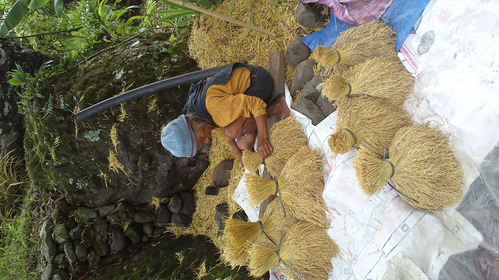
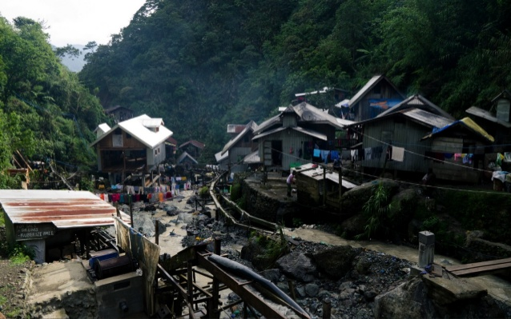
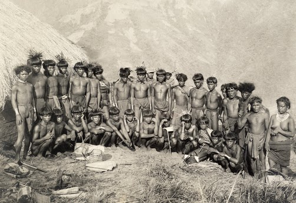

Livelihood
|  |
| Image Captured By Andreline Familaran (Lola Felomina is the woman holding the harvested rice crops) |
Farming
Farming is the primary livelihood that the People in Kalinga is relying to. Rice cultivation is an industry common in most Filipino communities but rice paddies carved along steep mountain slopes are one of the features unique in Cordillera
provinces. The Cordillera's rice terraces are found in Ifugao, Mountain Province, Benguet, Kalinga, some parts of Abra, and Apayao.
Over the years, the different provinces have come up with their own systems of preserving and managing the rice terraces as livelihood and food source.These systems, utilizing local knowledge on biodiversity, agro-ecosystems, and agriculture are entwined
with the ways of life of the Cordillera people.
|  |
| Image Captured By John Lino Familaran |
Mining
On the northern end of Luzon island in the Philippines is a mountainous region called the Cordillera. The Cordillera also sits upon a rich mineral belt that traverses the region. The Department of Environment and Natural Resources survey
records indicate the presence of 1.96 million metric tons of gold, 960.6 million metric tons of copper, and 3000 metric tons of manganese.
|  |
| Image from Google Images |
Hunting
Among the six major mountain peoples of Northern Luzon, only two, the Kalinga and the Apayao, maintain hunting and fishing as an appreciable supplement to their regular food gathering and growing activities. But although the Kalinga are
probably. the third most thoroughly studied group, after the Bontoc and Ifugao, there is little in the literature on their hunting and fishing techniques, terms, cere· monies, omens, seasons.